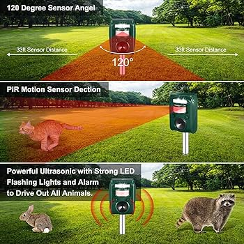

-
Parking Guidance Systems:
Ultrasonic distance meters are commonly used in parking garages and lots to guide drivers to available parking spaces. They can detect the presence of vehicles in parking bays and provide real-time information to drivers via digital signage or mobile apps.
-
Traffic Management:
Ultrasonic distance meters can be deployed at intersections and roadways to monitor traffic flow and detect vehicle presence. They can be used to control traffic signals, optimize traffic patterns, and reduce congestion on busy roads.
-
Animal Detection and Wildlife Conservation:

Ultrasonic distance meters can be deployed in wildlife conservation areas to detect the presence of animals and monitor their movements. They can help researchers study animal behavior, track migration patterns, and protect endangered species from poaching or habitat destruction.
-
Blind Stick:
The ultrasonic distance meter technology can be integrated into blind sticks to enhance their functionality. By utilizing ultrasonic sensors, blind individuals can detect obstacles more accurately and at greater distances, providing them with improved navigation and safety as they move through their environment.